Shanhaiguan, where the Great Wall meets the sea at its eastern end. Watercolor by J. R. Harding, 1899–1900. National Library of Wales. Public domain, Wikimedia Commons.
Recap · Beijing · 1644
Recap: In 1644 Rebels Took Beijing and the Last Ming Emperor Died
In the 1630s and 1640s the Ming was bankrupt, divided, and hit by famine and rebellion.
In 1644 the rebel Li Zicheng captured Beijing, and the last Ming emperor took his own life.
This lecture asks who filled the empty throne, and how.
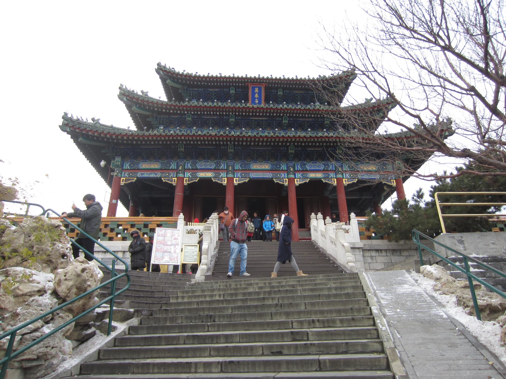
Wanchun Pavilion on Jingshan, the hill just north of the Forbidden City; the last Ming emperor hanged himself on the hill's slope. Photo: Another Believer, 2016. CC BY-SA 4.0, Wikimedia Commons.
Sources: Ebrey, Ch. 16, pp. 270, 272; Ch. 14 L4 for the Ming collapse.
Q1 story · Beyond the Ming border · 1100s–1500s
The Manchus Descended from the Jurchens Who Once Ruled North China
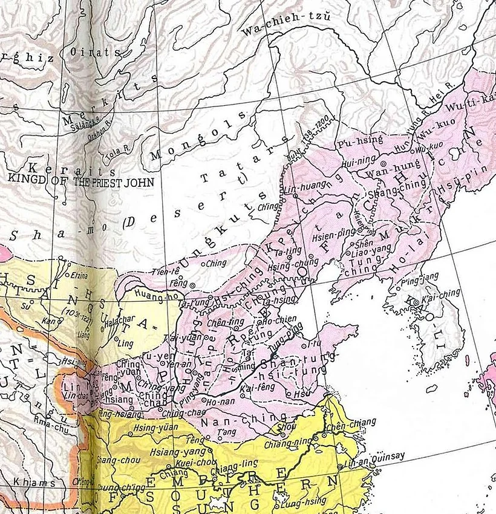
The Jurchen Jin empire (pink) and the Southern Song (yellow) in 1141. Albert Herrmann, Historical and Commercial Atlas of China (1935), map 32. Public domain, Wikimedia Commons.
The Manchus were descendants of the Jurchens, who had ruled north China as the Jin dynasty (1127–1234) · Ch. 8 L1 · jurchens ↗
They had lost the Jin written language but kept the Jin hairstyle: the front of the head shaved, the rest in a long braid called a queue.
They spoke a Tungus language, related to languages of Siberia and distantly to Korean and Japanese.
They were hunters, fishers, and farmers, not nomads, living in what is loosely called Manchuria.
Sources: Ebrey, Ch. 16, p. 271; Ch. 8 L1 for the Jurchen Jin.
Q1 story · Nurhaci's headquarters · 1595–1596
In 1595 a Korean Visitor Found Small, Armed, Quarrelling Villages
A Korean who traveled to Nurhaci's headquarters found Jurchen settlements of twenty households or fewer.
People lived by fishing, hunting for pelts, gathering pine nuts and ginseng, and growing wheat, millet, and barley.
Villages quarrelled over resources, and no man left his village without a bow or a sword.
Nurhaci already employed men from Ming Liaodong who spoke Chinese and Manchu and could write Chinese.
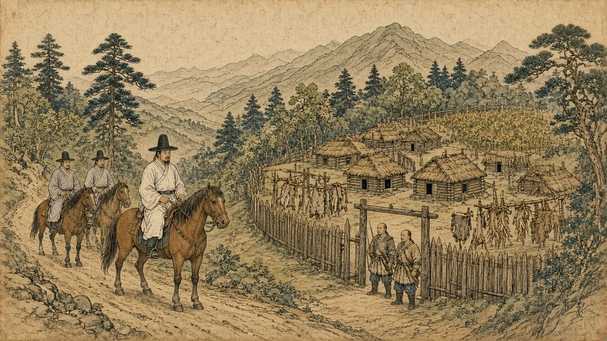
AI-generated illustration in a woodblock-print style, made for this deck: a Korean envoy and his escort ride up to a small fenced Jurchen hamlet in the 1590s, as armed villagers watch from the gate. An interpretation, not a historical source.
Sources: Ebrey, Ch. 16, p. 271. Image: AI-generated interpretation.
Q1 story · Manchuria and Beijing · 1583–1618
Nurhaci Rose from One Chief Among Many to Master of the Manchus
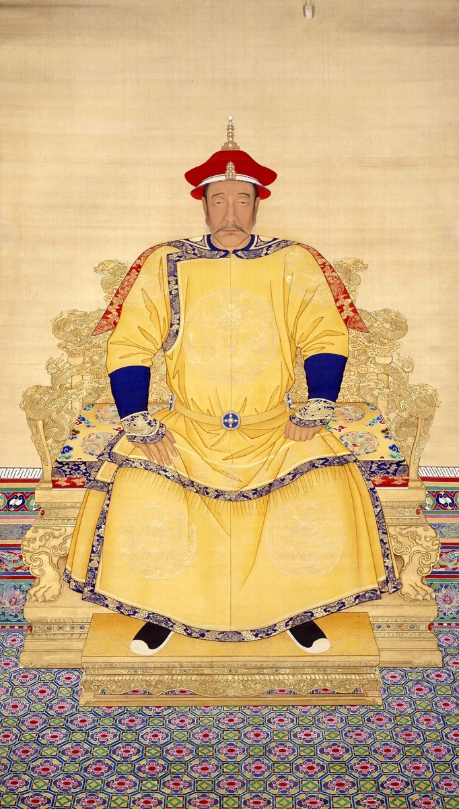
Court portrait of Nurhaci (1559–1626), painted after his death for the Qing ancestral collection. Anonymous Qing court painter. Palace Museum, Beijing. Public domain, Wikimedia Commons.
In 1583, at twenty-four, Nurhaci became leader of one group of Manchus and spent decades expanding his lands.
He knew the Ming firsthand: he led an embassy to Beijing in 1590 and offered to help fight Japan in Korea in 1592.
He and his children married Mongols as well as Manchus, sealing alliances.
In 1616 he called himself khan of a revived Jin dynasty; in 1618 he declared war on the Ming.
Sources: Ebrey, Ch. 16, p. 271.
Q1 names · One people, several names
Names Box: Jurchen, Manchu, Jin, Qing
One People, One State, Several Names
Jurchenthe older name of the people; their ancestors ruled north China as the Jin, 1127–1234
Manchuthe name Hong Taiji ordered his people to use in 1635, replacing Jurchen
Jinthe "revived Jin" Nurhaci proclaimed in 1616 (often called the Later Jin)
Qing"pure": the name Nurhaci's son Hong Taiji gave the state in 1636; the dynasty ruled China 1644–1911
Mukdenthe Jin capital in Manchuria, today's Shenyang
The same people appear as Jurchens and as Manchus.
The same state appears as Jin and as Qing.
After Nurhaci died in 1626, his son Hong Taiji ruled from Mukden and renamed the state Qing in 1636.
Sources: Ebrey, Ch. 16, pp. 270–272.
Q1 concept · Tribal society
Concept: In a Tribal Society, People Followed Their Own Chiefs
Concept
Tribal society
A society organized by kin groups, families and clans, whose members owe loyalty first to their own chief rather than to a state.
Like the Mongols, the Manchus had a tribal social structure.
A man's first loyalty went to his own group and its chief.
That is why the villages the Korean visitor saw were armed and quarrelling.
A leader who wanted a state had to make people loyal to him instead.
Sources: Ebrey, Ch. 16, p. 271.
Q1 story · Nurhaci's new order · c. 1600–1640s
Nurhaci's Banners Held Soldiers, Their Families, and Their Slaves
Nurhaci created new units called banners, each identified by its color.
Each banner was made up of military companies, but it included the soldiers' families and slaves too.
Each company had a captain whose position was hereditary, and many commanders came from Nurhaci's own lineage.
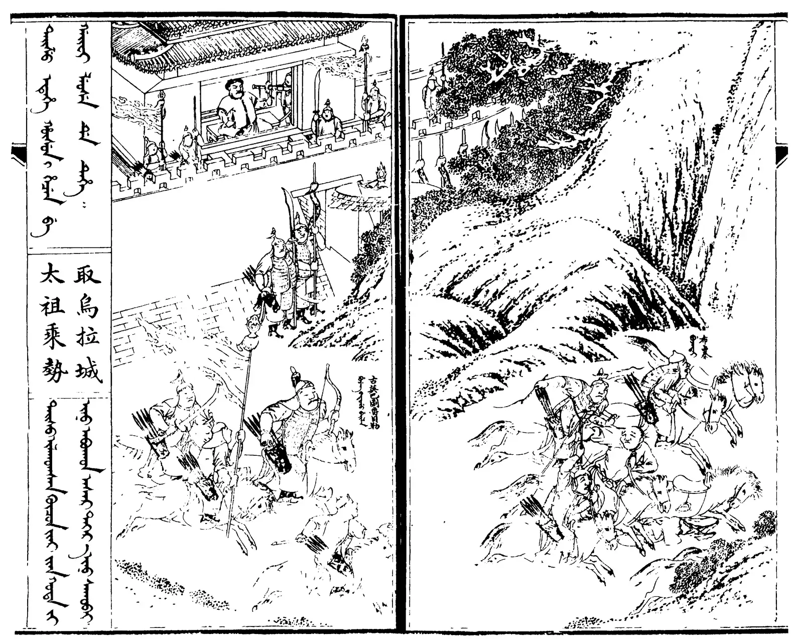
Nurhaci's horsemen take the walled city of Ula, 1613. Illustration from the Manzhou shilu (Veritable Records of the Manchus), redrawn for the Qianlong court in 1779–1781 after a picture book painted in 1635 for Hong Taiji. Public domain, Wikimedia Commons.
Sources: Ebrey, Ch. 16, p. 271.
Q1 story · Breaking old loyalties · c. 1600–1644
Defeated Groups Were Split Among Banners So Old Tribes Could Not Regroup
A defeated clan
↓ split up ↓
Banner A
Banner B
Banner C
Diagram made for this deck from Ebrey, p. 271.
When Nurhaci defeated another group of Manchus, he did not keep it together.
Its members were distributed among several banners to lessen their potential for subversion.
Chinggis Khan had reorganized his armies the same way to weaken tribal loyalties · Ch. 12 L1 · war-machine ↗
Old clan ties faded, and loyalty to the banner and its leader took their place.
Sources: Ebrey, Ch. 16, p. 271; Ch. 12 L1 for Chinggis Khan.
Q1 story · The banner army grows · to 1644
By 1644 There Were Manchu, Mongol, and Chinese Banners
Over time new companies and new banners were formed.
By 1644 there were twenty-four banners: eight Manchu, eight Mongol, and eight Chinese.
The banners brought Manchus, Mongols, and Chinese together in one organization.
Manchu
8 banners
Mongol
8 banners
Chinese
8 banners
Diagram made for this deck from Ebrey, p. 271.
Sources: Ebrey, Ch. 16, pp. 270–271.
Reading Guide · Review Question 1
Reading Guide · Review Question 1
Review Question 1
The Rise of the Manchus and the Banner System: Analyze how Nurhaci transformed the Jurchen people into the Manchu state. How did the creation of the banner system fundamentally alter their social and military organization?
Q2 story · The eastern end of the Great Wall · 1644
General Wu Sangui Opened the Gates, and in Weeks the Manchus Held Beijing
The Ming general Wu Sangui was guarding the eastern end of the Great Wall when he heard that Li Zicheng had taken Beijing.
Wu appealed to the Manchu regent Dorgon, and they joined forces against the rebels.
Wu opened the gates of the Great Wall to let the Manchus in.
Together they beat Li Zicheng's army at the pass, and within a couple of weeks they had occupied Beijing.
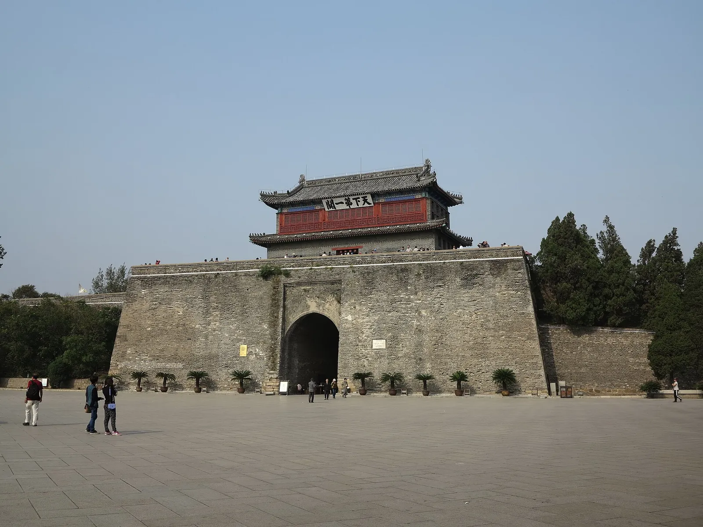
The gate tower at Shanhaiguan, the fortified pass at the eastern end of the Great Wall; the tower has been restored many times. Photo: Nyx Ning, 2014. CC BY-SA 3.0, Wikimedia Commons.
Sources: Ebrey, Ch. 16, p. 272.
Q2 story · North China and Nanjing · 1644–1647
The Manchus Refused to Stop, and Chinese Generals Joined Them
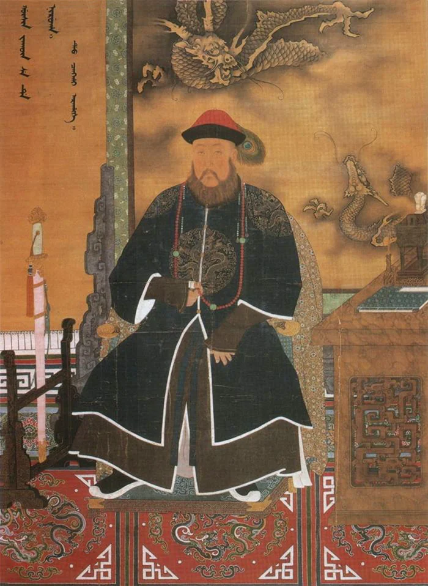
Dorgon, Prince Rui (1612–1650), regent for the young Shunzhi emperor. Anonymous portrait, 17th century. Public domain, Wikimedia Commons.
The Manchus made clear that they meant to take the throne themselves, and Wu and many other Chinese generals joined them.
Ming officials crowned a Ming prince at Nanjing, as the Song had done after losing the north · Ch. 8 L1 · fall-1127 ↗
Dorgon rejected the Ming offer to buy the Manchus off.
Wu and Manchu generals hunted down the rebels: Li Zicheng by 1645, Zhang Xianzhong by 1647.
Sources: Ebrey, Ch. 16, p. 272; Ch. 8 L1 for the Song precedent.
Q2 story · Yangzhou · 1645
Shi Kefa Refused to Surrender Yangzhou, and the City Was Massacred
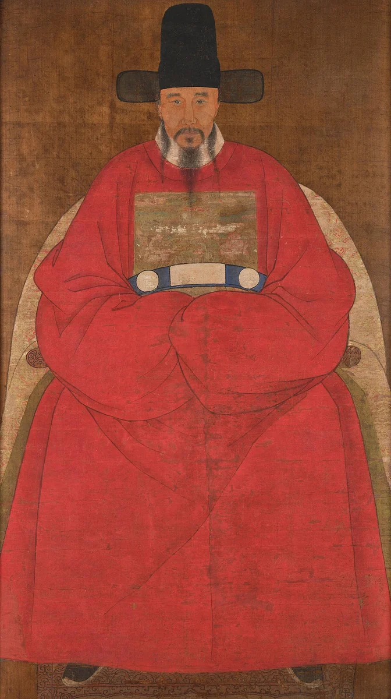
Shi Kefa (1601–1645), Ming minister of war at Nanjing. Portrait in ink and color on silk, said by a note on its back to be by one of his descendants. Public domain, Wikimedia Commons.
Many Ming generals defected and many local officials opened their city gates to the Qing armies.
Shi Kefa, a scholar-official serving as minister of war, held Yangzhou and refused to surrender.
After a five-day battle, the angry Manchu general let his army sack the city for about ten days, killing a huge number of people.
As southern cities fell, many Ming loyalists took their own lives, often joined by the women of their families.
Sources: Ebrey, Ch. 16, pp. 272–273.
Q2 story · The whole empire · summer 1645
In 1645 Every Chinese Man Was Ordered to Shave His Head Like a Manchu
In summer 1645 the Manchu command ordered every Chinese serving in its armies to shave the front of the head in the Manchu fashion.
The point was presumably to make it easy to tell which side a man was on.
Soon the order was extended to all Chinese men.
The hairstyle became a visible test of loyalty to the new dynasty.
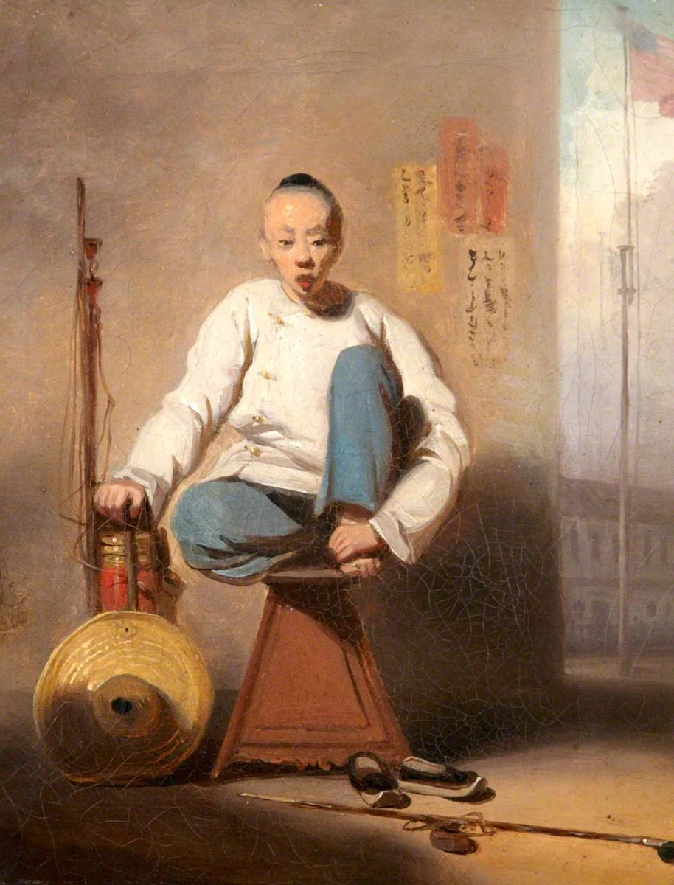
A Chinese Barber outside the American Factory in Canton, by George Chinnery, 1826. The barber's own head shows the Manchu style: front shaved, the rest braided. National Trust. Public domain, Wikimedia Commons.
Sources: Ebrey, Ch. 16, pp. 271, 273.
Q2 story · The Yangzi delta · 1645
The Order Turned Surrender into Revolt, and Defiant Cities Paid in Blood
The head-shaving order aroused deep resentment among Chinese men.
It made it easier for Ming loyalists to organize resistance.
When newly conquered towns refused to shave, Manchu commanders ordered defiant cities such as Jiading, Changshu, and Jiangyin slaughtered.
Many people who had accepted Qing rule now took up arms over their hair.
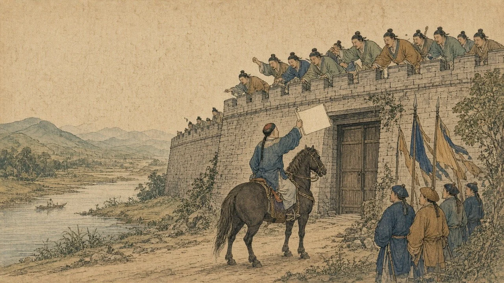
AI-generated illustration in a woodblock-print style, made for this deck: townsmen on a Yangzi-delta city wall, hair still in Ming topknots, refuse a Qing herald who holds up the head-shaving order before the closed gate, 1645. An interpretation, not a historical source.
Sources: Ebrey, Ch. 16, p. 273. Image: AI-generated interpretation.
Q2 story · The south coast and Taiwan · 1645–1683
Resistance Lasted Decades, Ending on Taiwan in 1683
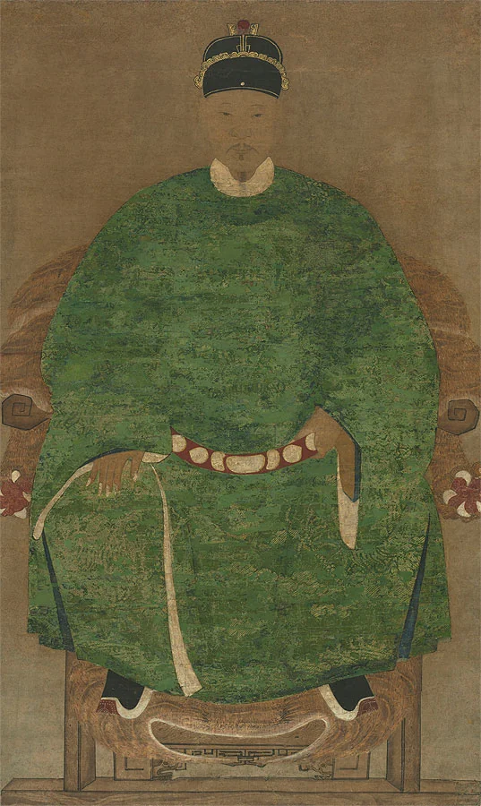
The Portrait of Koxinga, anonymous, mid-17th century, ink and color on silk. National Museum of Taiwan History (restored by the National Palace Museum). Public domain, Wikimedia Commons.
Ming loyalist resistance continued long after little hope remained.
The Manchus did not defeat the two main loyalist camps until 1661–1662.
Zheng Chenggong, known in the West as Koxinga, took Taiwan from the Dutch in 1662; his family held out there until 1683.
Two Names, One Man
Zheng Chenggonghis Chinese name
Koxingathe name Europeans used for him
Sources: Ebrey, Ch. 16, p. 273.
Q2 concept · Loyalism
Concept: Loyalism Meant Honoring the Fallen Dynasty by Refusing the New One
Concept
Ming loyalism
Staying faithful to a fallen dynasty by refusing to serve the dynasty that replaced it, whether by fighting, by dying, or by withdrawing from public life.
Militant loyalists fought: Shi Kefa, the defiant cities, Koxinga.
Others died rather than live under the Qing.
Less militant loyalists refused office and wrote, and their writing questioned dynastic rule itself.
Sources: Ebrey, Ch. 16, p. 273; Ch. 12 L3 for the Song loyalists.
Q2 story · Zhejiang · after 1649
Huang Zongxi Decided the Real Problem Was the Emperor Himself
Huang Zongxi (1610–1695) served the Ming resistance court and followed it in retreat.
After 1649 he lived in retirement at home in Zhejiang.
The conquest made him rethink the basic ideas of Chinese political order.
He concluded that the Ming's problem was not eunuchs but the imperial institution itself · Ch. 14 L1 · ming-despotism ↗
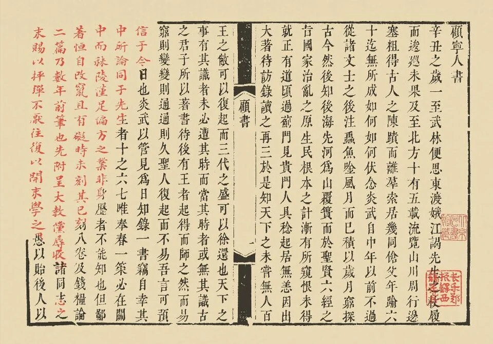
Opening page of an early Qing woodblock printing of Huang Zongxi's political treatise Mingyi daifang lu (often translated Waiting for the Dawn). Public domain, Wikimedia Commons.
Sources: Ebrey, Ch. 16, p. 273; Ch. 14 L1 for Ming despotism.
Q2 story · Kunshan and north China · 1645–1682
Gu Yanwu Watched His Adoptive Mother Starve Herself, Then Studied Mines and Farms
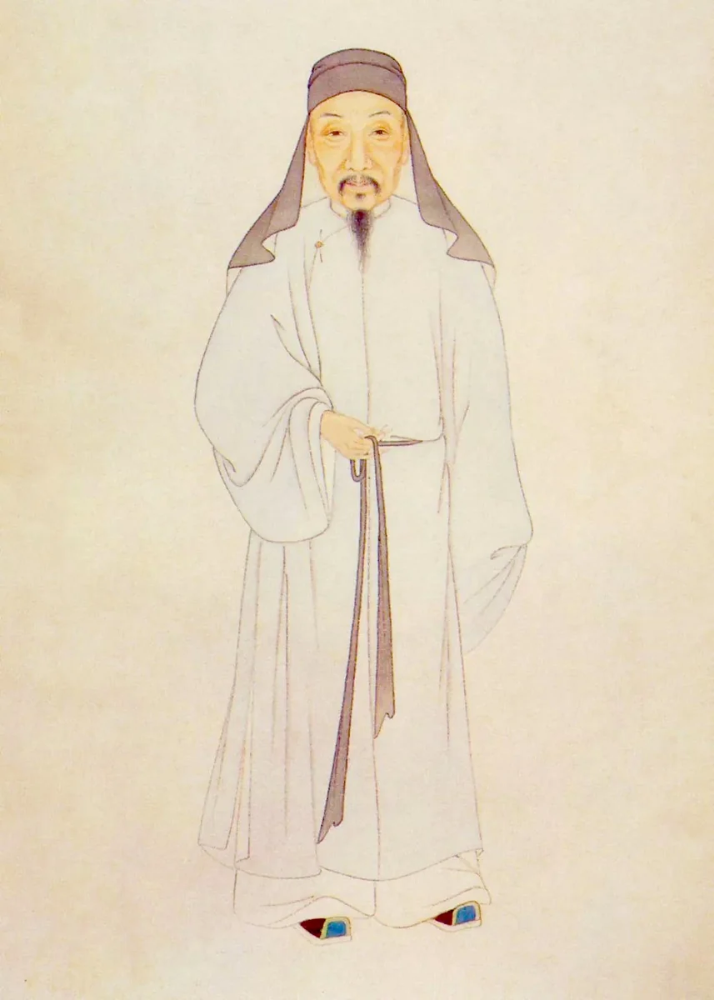
Gu Yanwu (1613–1682), from Portraits of Qing Scholars compiled by Ye Yanlan, 19th century, a later imagined likeness. Public domain, Wikimedia Commons.
Gu Yanwu (1613–1682) helped defend his native city, then watched his adoptive mother starve herself rather than live under Manchu rule · L4 z · ps-fiancees ↗
He traveled across north China to understand Ming weaknesses, studying banking, mining, and farming.
He scorned scholars who wasted time on empty speculation or literary elegance.
He blamed the Ming's overcentralization and called for greater local autonomy.
Sources: Ebrey, Ch. 16, p. 273.
Q2 story · Hunan · 1642–1692
Wang Fuzhi Said a Ruler Must Guard His People as Ants Guard Their Nest
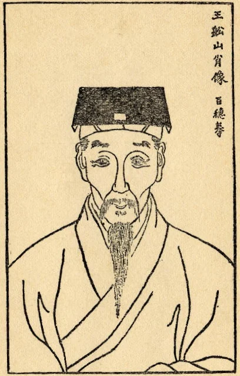
Wang Fuzhi (1619–1692), an imagined portrait by the Japanese artist Hirafuku Hyakusui, published 1931. Public domain, Wikimedia Commons.
Wang Fuzhi (1619–1692) raised troops for the Ming, then withdrew in 1650 to live as a retired scholar.
He wanted to return Confucianism to its roots and protect Chinese civilization from "barbarians."
He held that distinguishing Chinese from barbarians mattered as much as distinguishing good men from petty men.
The Ming, he argued, had failed a ruler's most basic duty: protecting his people from intruders.
Now even the ants have rulers who preside over the territory of their nests, and when red ants or flying white ants penetrate their gates, the ruler organizes all his own kind into troops to bite and kill the intruders…Wang Fuzhi, quoted in Ebrey, p. 273
Sources: Ebrey, Ch. 16, p. 273, quoting de Bary and Lufrano, Sources of Chinese Tradition from 1600 Through the Twentieth Century, p. 35.
Reading Guide · Review Question 2
Reading Guide · Review Question 2
Review Question 2
The Conquest of Beijing and Ming Loyalism: Discuss the collapse of the Ming Dynasty and the diverse ways in which Chinese subjects responded to the Manchu conquest. How did militant resistance differ from the intellectual critiques of Ming loyalists?
A Boy Who Survived Smallpox Would Make the Conquest Permanent
The Kangxi emperor in informal dress, holding a brush. Anonymous Qing court painters, Kangxi period (1662–1722). Palace Museum, Beijing. Public domain, Wikimedia Commons.
By the 1660s the Manchus held China, but they had not yet won the loyalty of Chinese scholars.
In 1661 the young Shunzhi emperor died of smallpox.
The next emperor was chosen partly because he had already survived the disease.
Today's lecture ends here. Continue on your own: the stories below finish this chapter's history, and two of them end with a review question to answer.
"A little learning is a dang'rous thing; Drink deep, or taste not the Pierian spring."Alexander Pope, An Essay on Criticism, 1711
Pierian Spring · Q14 and Q4 story · Garrison cities · after 1644
After 1644 Bannermen Moved into Ninety Walled Garrisons Across China
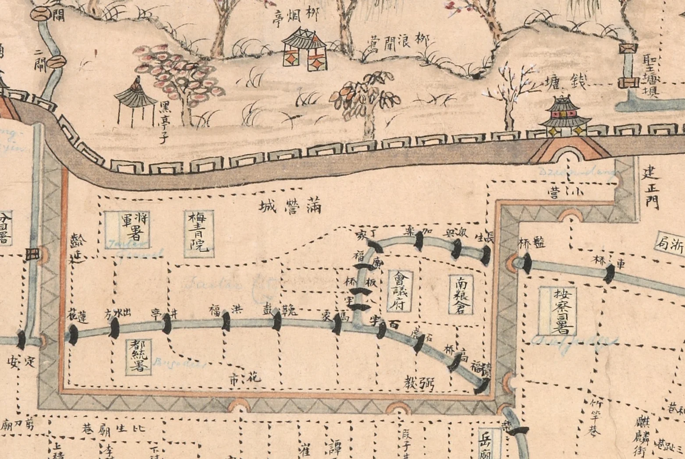
The walled Manchu garrison quarter of Hangzhou, detail of A Map of the Rivers, Dry Land, Lakes, and Villas of Hangzhou and West Lake, 1716–1727. British Museum copy. Public domain, Wikimedia Commons.
The Kangxi, Yongzheng, and Qianlong emperors used the banners to keep military control and preserve Manchu privileges.
As China was pacified, banner forces settled in more than ninety garrisons, usually inside a city's walls.
The banner, once a whole people on the move, became an occupying army with families · h · banner-families ↩
Sources: Ebrey, Ch. 16, p. 277.
Pierian Spring · Q14 and Q4 story · Beijing · after 1644
All Chinese Were Driven out of Northern Beijing
All the Chinese who lived in the northern half of Beijing were forced out to make room for bannermen.
Beijing became very much a Manchu city.
In Hangzhou, Nanjing, Xi'an, and Taiyuan, large sections were cleared for the banners.
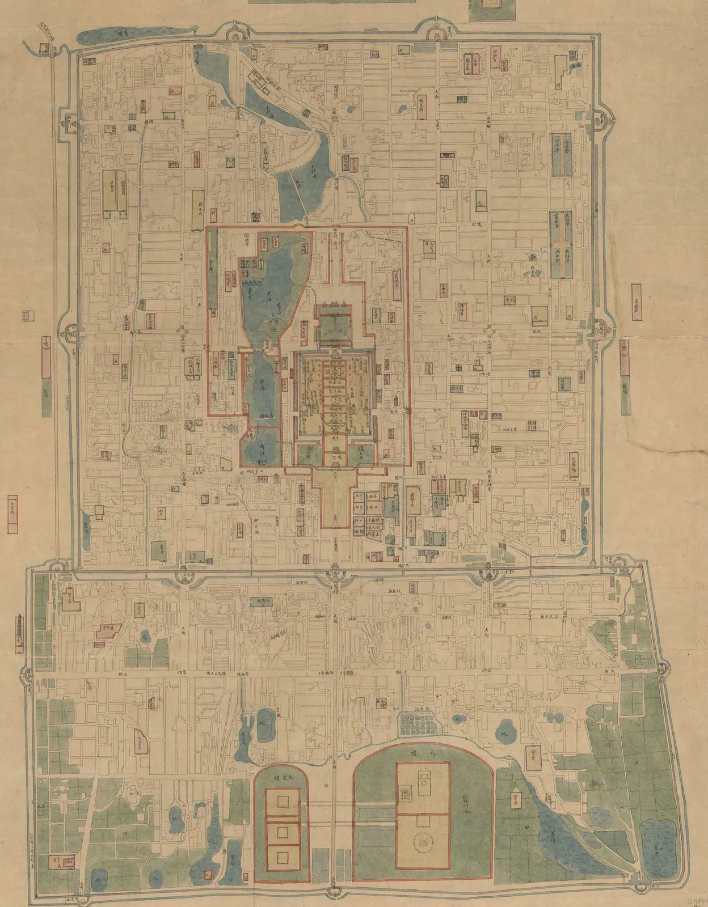
Beijing quan tu (Complete Map of Beijing), hand-colored map by Li Mingzhi, 1861. The square northern city, with the palace at its center, is where the bannermen lived; the wider southern city became the Chinese quarter. Library of Congress. Public domain, Wikimedia Commons.
Sources: Ebrey, Ch. 16, p. 277; map from the Library of Congress.
Pierian Spring · Q14 and Q4 concept · Hereditary caste
Concept: A Hereditary Caste Was Born to Serve the State
Concept
Hereditary occupational caste
A group whose rank and work are fixed at birth: you belong because your parents did, and you are expected to do the job your group exists to do.
Bannermen became, in a sense, a hereditary occupational caste, ranked above others in society.
They were expected to devote themselves to service to the state.
They were expected to live apart from non-banner Chinese.
They were not allowed to intermarry with them.
Sources: Ebrey, Ch. 16, p. 277.
Pierian Spring · Q14 story · The countryside around Beijing · after 1644
The State Took Two Million Acres to Support the Garrisons
Outside the cities, land was expropriated, taken from its owners by the state, to support the garrisons.
Some two million acres were taken in all, most densely in the region around Beijing.
In Manchuria bannermen had farmed their own fields, but in China proper they did not cultivate the land.
Instead, the land was rented out, and the rents paid for the bannermen's support.
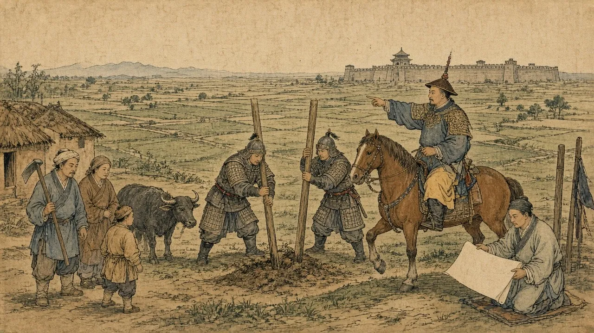
AI-generated illustration in a woodblock-print style, made for this deck: a Manchu official directs bannermen staking out farmland near Beijing for the garrisons, while the Chinese family who farmed it looks on. An interpretation, not a historical source.
Sources: Ebrey, Ch. 16, p. 277. Image: AI-generated interpretation.
Pierian Spring · Q14 story · Garrison life · late 1600s–1700s
Bannermen Lived on Stipends in Silver and Grain, from Cradle to Grave
Bannermen lived on stipends paid from the land rents, partly in silver and partly in grain.
The dynasty supported banner soldiers and their families from cradle to grave.
There were special allowances for travel, weddings, and funerals.
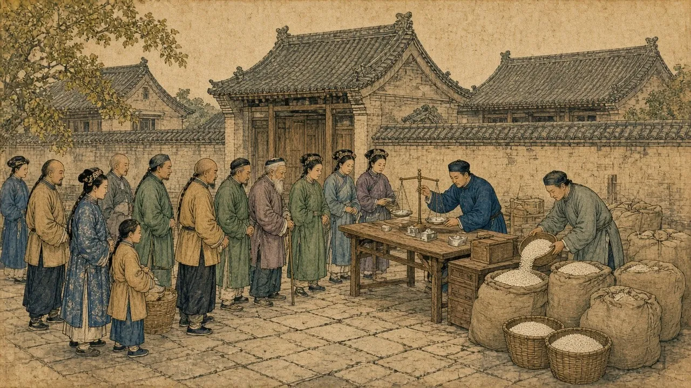
AI-generated illustration in a woodblock-print style, made for this deck: banner families line up at a garrison granary as a clerk weighs out silver and a porter measures rice for the monthly stipend. An interpretation, not a historical source.
Sources: Ebrey, Ch. 16, p. 277. Image: AI-generated interpretation.
Pierian Spring · Q14 and Q4 story · Garrison towns · 1700s
Banner Families Grew Faster Than the Army Needed Soldiers
Once the conquest was complete, the banner population grew faster than the need for soldiers.
Within a couple of generations there were not enough army posts for all adult banner men.
Yet bannermen were not allowed to work at anything except soldiering or office, so many lived in forced idleness on relatives' stipends.
Under Qianlong the problem was so serious that many Chinese bannermen, above all in the provincial garrisons, were removed and reclassified as commoners.
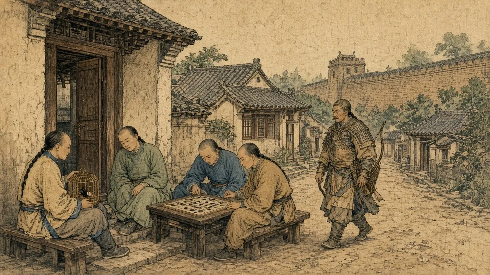
AI-generated illustration in a woodblock-print style, made for this deck: idle young bannermen pass the day with a songbird and a board game in a garrison lane, as an old soldier in armor walks by. An interpretation, not a historical source.
Sources: Ebrey, Ch. 16, p. 277. Image: AI-generated interpretation.
Pierian Spring · Q14 and Q4 story · Garrison towns · 1700s
Debts Mounted, and Commanders Sold Banner Land
Despite their privileges, impoverishment of the banner population quickly became a problem.
The government from time to time forgave all bannermen's debts, but many still went bankrupt.
Company commanders sometimes sold off banner land to pay stipends.
Each sale shrank the land that paid for future support, making the problem worse.
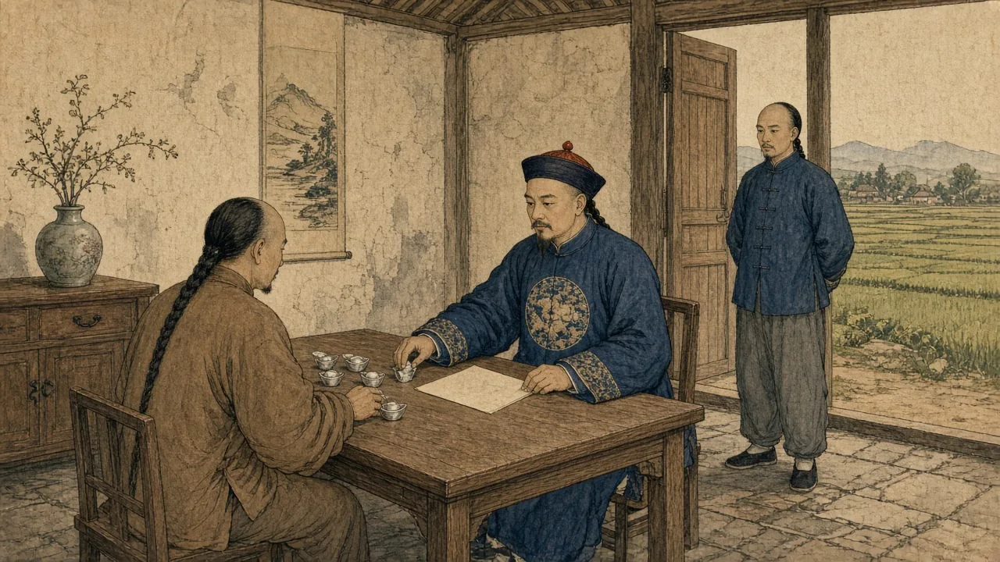
AI-generated illustration in a woodblock-print style, made for this deck: a banner company commander sells off a parcel of banner land, counting out the buyer's silver beside the deed, while a man waits at the door with the fields beyond. An interpretation, not a historical source.
Sources: Ebrey, Ch. 16, p. 278. Image: AI-generated interpretation.
Reading Guide · Review Only Question 14
Reading Guide · Review Only Question 14
Review Only Question 14
Banner Land Expropriation and Support System (Review Only): Describe the mechanics of banner land expropriation and how the Qing supported the banner garrisons. What long-term problems did this system create?
of jinshi degrees went to Manchus, who were never more than 1% of the population
≈70%
of posts in the capital's agencies were reserved for bannermen, under 20% for Chinese
≈½
of the top posts, and about half of provincial governors and governors-general
Figures from Ebrey, pp. 277–278.
Sources: Ebrey, Ch. 16, pp. 277–278; Ch. 12 L2 for the Yuan comparison.
Pierian Spring · Q4 story · The courtroom · 1700s
In Court a Manchu Could Stand Where a Chinese Had to Kneel
Bannermen fell under imperial commissioners, not the local magistrate or prefect.
When a Chinese and a Manchu testified, the Chinese had to kneel before the magistrate, but the Manchu could stand.
For the same crime, a Manchu got a lighter punishment, such as sixty days in the cangue instead of exile for life.
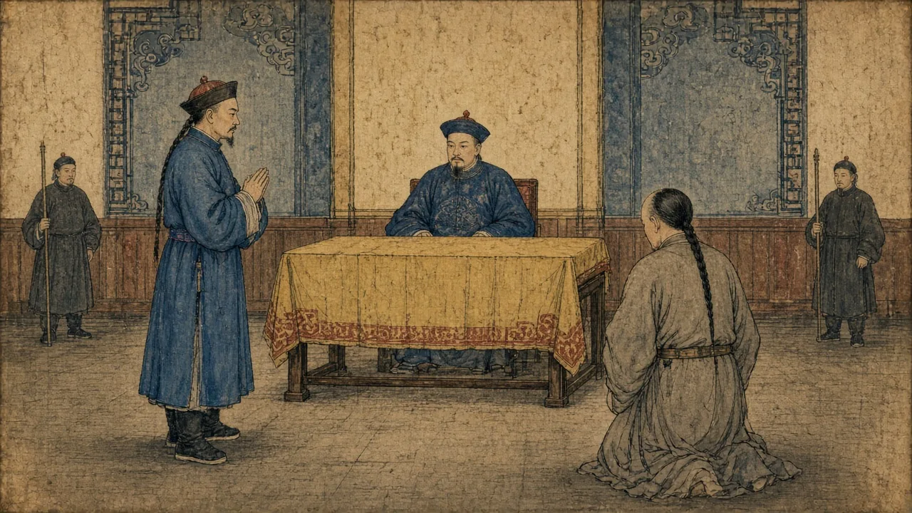
AI-generated illustration in a woodblock-print style, made for this deck: in a Qing courtroom a Manchu bannerman stands to testify while the Chinese party kneels before the magistrate. An interpretation, not a historical source.
Sources: Ebrey, Ch. 16, p. 278. Image: AI-generated interpretation.
Pierian Spring · Q4 story · Manchuria · mid-1700s
Sent Back to Manchuria, City Bannermen Sneaked Home
The Qianlong emperor tried resettling Manchus back in Manchuria to farm.
Bannermen used to city life in China rarely wanted to return to farming.
Most sneaked back as soon as they could.
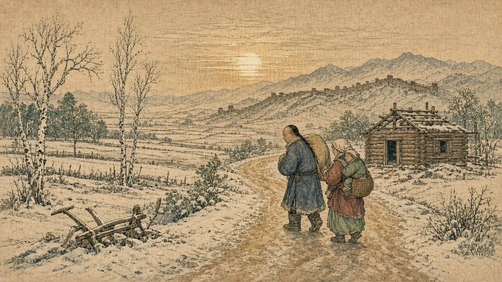
AI-generated illustration in a woodblock-print style, made for this deck: a banner family resettled in snowy Manchuria abandons its half-built farm and slips away south at dawn. An interpretation, not a historical source.
Sources: Ebrey, Ch. 16, p. 278. Image: AI-generated interpretation.
Pierian Spring · Q4 story · Beijing and the hunting grounds · 1700s
They Spoke Beijing Chinese, and Their Archery Faded
Within a generation, bannermen spoke the Chinese dialect of Beijing, and Manchu became a language learned at school.
City life and long peace wore down their skills as horsemen and archers.
Qianlong, who knew how the Jin Jurchens had lost their ways in China, discouraged bannermen from Chinese culture.
He preached that frugality was a Manchu trait, needed to keep their identity.
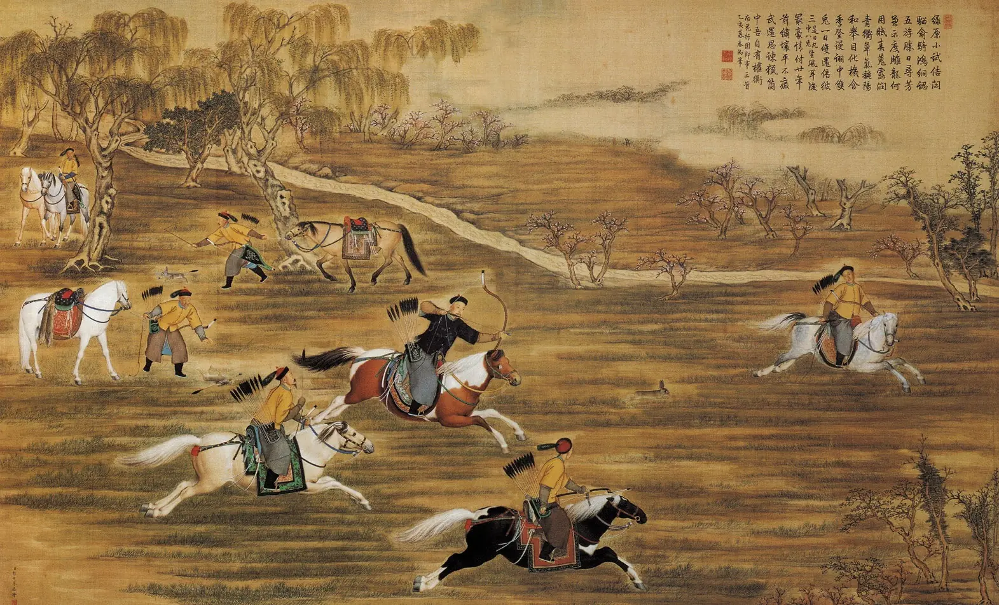
The Qianlong Emperor Hunting Hare, by Giuseppe Castiglione, 1755. The emperor shows off the Manchu horsemanship and archery he urged on his bannermen. Palace Museum, Beijing. Public domain, Wikimedia Commons.
Sources: Ebrey, Ch. 16, pp. 278–279.
Pierian Spring · Q4 story · The whole empire · 1644–1800
Yet the Banners Never Turned on the Dynasty
Portrait of the Imperial Bodyguard Zhanyinbao, anonymous Qing court artist, 1760, in the European-influenced style Qianlong favored. Metropolitan Museum of Art, 1986.206. CC0, Wikimedia Commons.
Perhaps because they were favored in so many ways, the bannermen proved a very loyal service elite.
Unlike the armies of other large empires, the banners never turned on the ruling house.
They never used the resources given to them to challenge the central government.
Sources: Ebrey, Ch. 16, pp. 277, 279.
Reading Guide · Review Question 4
Reading Guide · Review Question 4
Review Question 4
The Evolution and Impoverishment of the Bannermen: How did the role and socioeconomic status of the banner forces evolve during the Qing Dynasty? Why did a system designed to create a privileged military elite eventually lead to widespread impoverishment?
Pierian Spring · More to explore · Mukden · 1626–1643
Hong Taiji Built the Qing State, and Dorgon Carried It to Beijing
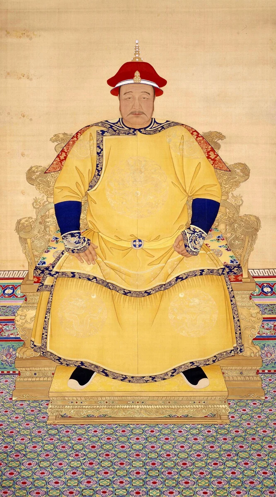
Court portrait of Hong Taiji (1592–1643), anonymous Qing court painter. Palace Museum, Beijing. Public domain, Wikimedia Commons.
Nurhaci's son Hong Taiji succeeded him in 1626 and built up the Jin state from Mukden.
He grudgingly used Chinese officials but wanted a multiethnic elite equally skilled in war and in paperwork.
In 1636 he renamed the state Qing, "pure."
When he died in 1643, his brother Dorgon became the leading regent for his five-year-old son, the Shunzhi emperor.
Sources: Ebrey, Ch. 16, p. 271.
Sources and image credits
The Stories in This Deck Rest on These Sources
Main source
Patricia Buckley Ebrey, A History of China, Chapter 16, "The Creation of the Manchu Empire (1600–1800)," pp. 270–287. All page references in this deck are to these pages.
W. Theodore de Bary and Richard Lufrano, Sources of Chinese Tradition from 1600 Through the Twentieth Century (Columbia University Press, 2000), p. 35, as quoted in Ebrey, p. 273 (Wang Fuzhi).
Further reading beyond Ebrey
Frederic Wakeman Jr., The Great Enterprise (1985) (slides e, l, o); Kenneth M. Swope, A Dragon's Head and a Serpent's Tail (2009) (slide e).
Pamela Kyle Crossley, The Manchus (1997) (slide f); Mark C. Elliott, The Manchu Way (2001) (slide ee).
Lynn A. Struve, Voices from the Ming-Qing Cataclysm (1993); Tobie Meyer-Fong, Building Culture in Early Qing Yangzhou (2003) (slide n).
Philip A. Kuhn, Soulstealers (1990) (slide o); Tonio Andrade, Lost Colony (2011) (slide q).
Wm. Theodore de Bary, trans., Waiting for the Dawn (1993) (slide s); Weijing Lu, True to Her Word (2008) (slide t).
Images (real; all via Wikimedia Commons)
a: J. R. Harding, Shanhaiguan, watercolor, 1899–1900, National Library of Wales. Public domain.
b: Wanchun Pavilion, Jingshan. Photo: Another Believer, 2016. CC BY-SA 4.0.
c: Albert Herrmann, "China 1141 A.D.," Historical and Commercial Atlas of China. Public domain.
e: Court portrait of Nurhaci, Palace Museum, Beijing. Public domain.
h: "Taizu takes Ula city," Manzhou shilu illustration, redrawn 1779–1781 after a 1635 original. Public domain.
l: Gate tower at Shanhaiguan. Photo: Nyx Ning, 2014. CC BY-SA 3.0.
m: Portrait of Dorgon, 17th century. Public domain.
n: Portrait of Shi Kefa, ink and color on silk. Public domain.
o: George Chinnery, A Chinese Barber outside the American Factory in Canton, 1826, National Trust. Public domain.
q: The Portrait of Koxinga, mid-17th century, National Museum of Taiwan History. Public domain.
s: Huang Zongxi, Mingyi daifang lu, early Qing woodblock edition. Public domain.
t: Gu Yanwu, from Ye Yanlan, Portraits of Qing Scholars. Public domain.
u: Hirafuku Hyakusui, portrait of Wang Fuzhi, 1931. Public domain.
w: Portrait of the Kangxi emperor in informal dress, Palace Museum, Beijing. Public domain.
y: Manchu quarter of Hangzhou, map of 1716–1727 (detail), British Museum copy. Public domain.
z: Li Mingzhi, Beijing quan tu, hand-colored map, 1861, Library of Congress (gm71005149). Public domain.
kk: Giuseppe Castiglione, The Qianlong Emperor Hunting Hare, 1755. Public domain.
ll: Portrait of the Imperial Bodyguard Zhanyinbao, 1760, Metropolitan Museum of Art. CC0.
nn: Court portrait of Hong Taiji, Palace Museum, Beijing. Public domain.
AI-generated illustrations
Slides d, p, cc, dd, ee, ff, ii and jj: AI-generated woodblock-style illustrations made for this deck. Interpretations, not historical sources.
Diagrams
Slides i, j and hh: diagrams made for this deck from Ebrey, pp. 271, 277–278.
The queue was the Manchu man's hairstyle: the front of the head shaved, and the rest of the hair grown long and worn in a single braid down the back (Ebrey, p. 271).
×
Banner
A banner was a Manchu unit identified by a color. It was made up of military companies but also included the soldiers' families and slaves, so it was an army, a community, and an administration at once (Ebrey, p. 271).
Members were called bannermen.
×
Stipend
A stipend is a regular allowance paid by the state. Banner stipends came from the rents on expropriated land and were paid partly in silver and partly in grain (Ebrey, p. 277).
×
Cangue
The cangue was a large wooden collar locked around a convicted person's neck as a public punishment (Ebrey, p. 278).